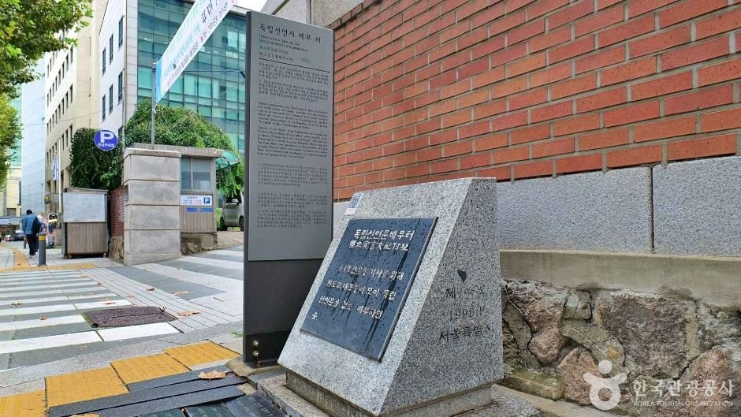
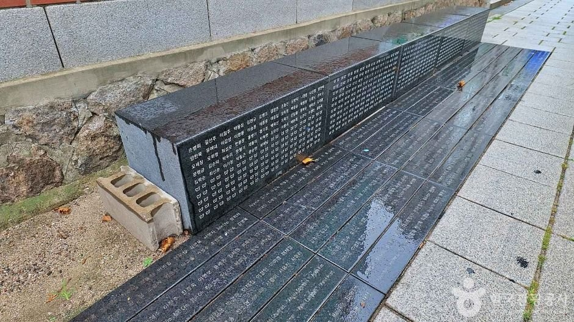
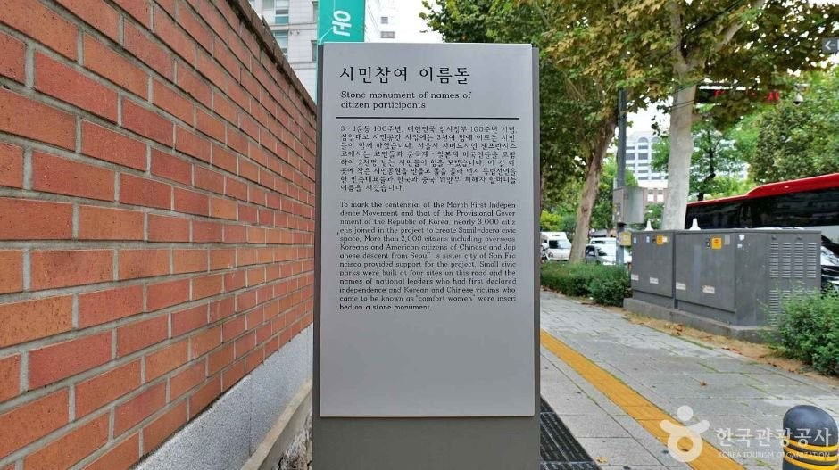
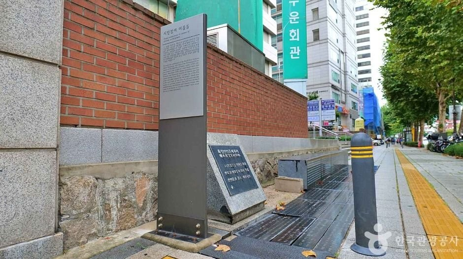

Seoul Independence Declaration Distribution Site Guide: Overview
This Seoul Independence Declaration Distribution Site guide covers a compact memorial in Gyeonun-dong, Jongno-gu, right across the street from Unhyeongung Palace. The site is called 독립선언문 배부 터 — the place where, in the spring of 1919, independence activists gathered to review and distribute Korea’s Declaration of Independence during the March 1st Movement.
It is not a museum and not a ticketed palace. It is a marker stone and a set of inscribed name stones on Samil-daero, small enough that people walk past it without looking down. That is exactly why it rewards a slow stop if you are already in Jongno for Unhyeongung, Insadong or the palaces.

What Happened Here in 1919
According to Korea Tourism Organization destination text, independence activists met at this spot to review the Declaration of Independence and then distribute it. The declaration itself was printed at the nearby Boseong Printing House and stored in the courtyard of the Cheondogyo Central Temple (Daegyodang), which was under construction at the time. That courtyard sits immediately beside today’s memorial. From there, copies were shared with religious and student representatives — one of the quiet logistical steps behind the public March 1st Movement.
The marker that stands here now is how the city keeps that address visible: not with a large exhibition hall, but with a stone you can read in a few minutes if you know to stop.
What to See at the Site
Start with the inscribed marker itself — it names the place in Korean as the Independence Declaration Distribution Site. In front of it are stones carved with the names of the 33 national representatives and of Korean women who were victims of the Japanese military “comfort women” system. Reading the names one by one is the visit. There is also an information panel on site (Korean and English appear on the panel photography we reviewed).
A good simple order, matching how the place is laid out: cross from Unhyeongung, read the marker, then read the names. The site sits beside everyday Jongno traffic and the Gyeonun neighborhood buildings, which is part of its character — history along a street people use on ordinary days.




Visitor Information
| Item | Details |
|---|---|
| Name | Independence Declaration Distribution Site (독립선언문 배부 터) |
| Address | 457 Samil-daero, Gyeonun-dong, Jongno-gu, Seoul (서울 종로구 삼일대로 457) |
| Landmark | Directly across the street from Unhyeongung Palace |
| History | 1919 review and distribution point for the Independence Declaration (per KTO) |
| Hours | Described as always open |
| Closed | Open year-round, per official visitor notes |
| Admission | No separate viewing fee listed in official materials |
| Inquiry phone / parking | Not provided in the official text we reviewed — check on site |
| Time needed | 10–20 minutes at the stones; longer if you pair it with Unhyeongung |
Sources: Korea Tourism Organization (한국관광공사) destination text. Photos © Korea Tourism Organization. No AI-generated images. Outdoor access can change with street work or events, so confirm locally if you are traveling far for this stop alone.
Getting There
Use Unhyeongung Palace as your landmark and cross Samil-daero to the memorial. The address to paste into Naver Map or Kakao Map is 서울 종로구 삼일대로 457, or search 독립선언문 배부 터. The palace sits in central Jongno; search the map from the Unhyeongung / Anguk area rather than memorizing a subway exit number — exits and construction detours change.
This is an outdoor sidewalk memorial, not a building with a ticket window. There is no official parking note in the KTO text we used, so arrive on foot or by transit if you can.
Tips for Your Visit
- Go in daylight if you want to read the carved names clearly. The destination notes also mention the quieter alley mood after dark, but the inscriptions are the reason to come.
- Pair it with Unhyeongung rather than making it a stand-alone pilgrimage unless March 1st history is your main interest.
- Look down and pause. The site is deliberately modest. If you only photograph the palace walls, you will miss it.
- Be respectful around the name stones — they record independence representatives and victims, not decorative street art.
How It Compares with Nearby Jongno Walks
| Independence Declaration Site | Gwansanggam Gwancheondae | Sungnyemun Gate ceremony | |
|---|---|---|---|
| Neighborhood | Gyeonun-dong, across from Unhyeongung | Wonseo-dong, also Jongno | Namdaemun / Sungnyemun |
| Time needed | A short, focused stop | A small historic observatory visit | A scheduled guard ceremony |
| Best if you want | March 1st Movement history in situ | Joseon astronomy heritage | A more theatrical, tourist-facing ritual |
Pros & Cons
| Pros | Cons |
|---|---|
| Free outdoor memorial next to a major palace landmark | Very small — not a half-day attraction on its own |
| Clear link to the 1919 Independence Declaration | Easy to walk past if you do not already know the name |
| Name stones make the history personal rather than abstract | No staffed ticket office, listed phone or parking guidance in official notes |
| Combines naturally with an Unhyeongung or Insadong walk | Street traffic is part of the setting |
Who It Suits
- Great for: Visitors interested in the March 1st Movement and modern Korean history.
- Great for: Anyone already walking between Unhyeongung, Insadong and the palaces.
- Great for: A short, free stop that does not need a ticket.
- Less ideal: Travelers who only want large palaces, cafés or shopping — you may find it too quiet and too small.
Plan Your Seoul Trip
Independence Declaration Site FAQ
What is the Independence Declaration Distribution Site?
It is a memorial in Gyeonun-dong, Jongno-gu, Seoul, marking the place where activists reviewed and distributed the 1919 Declaration of Independence. The Korean name is 독립선언문 배부 터.
Where is it?
457 Samil-daero, Gyeonun-dong, Jongno-gu, Seoul — across the street from Unhyeongung Palace. Search '독립선언문 배부 터' in Naver Map or Kakao Map.
Is it free?
Official visitor notes do not list a separate viewing fee. It is an outdoor memorial described as always open and open year-round. Street conditions can change, so confirm locally if needed.
How long do I need?
About 10–20 minutes to read the marker and the name stones, plus extra time if you visit Unhyeongung across the street.
Is there a phone number or parking?
The official materials we reviewed do not list an inquiry number or parking information.